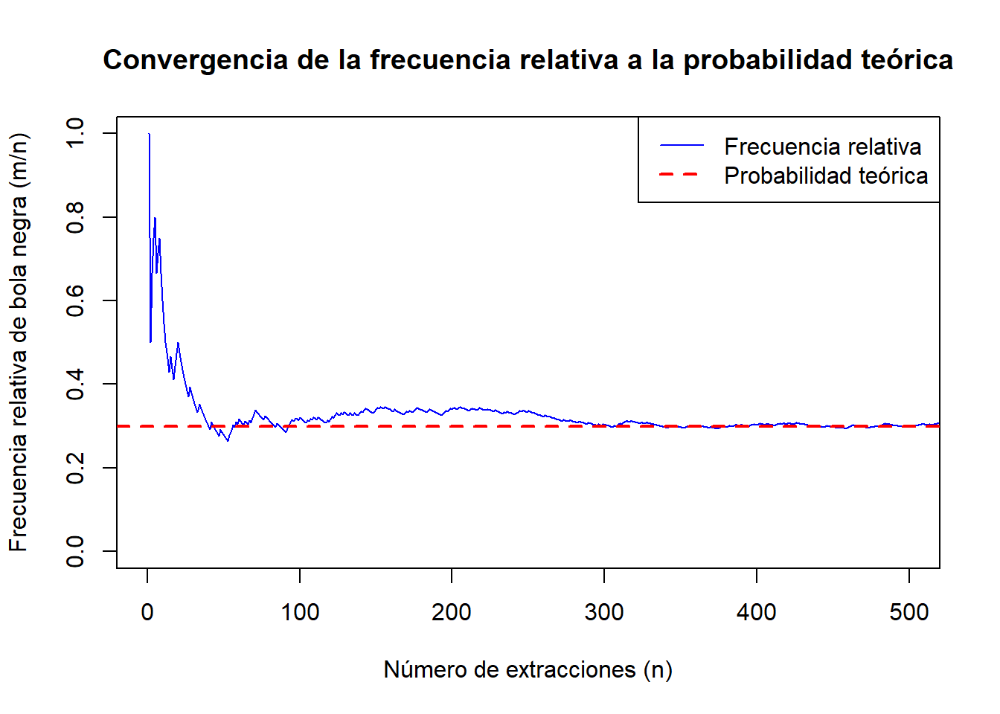
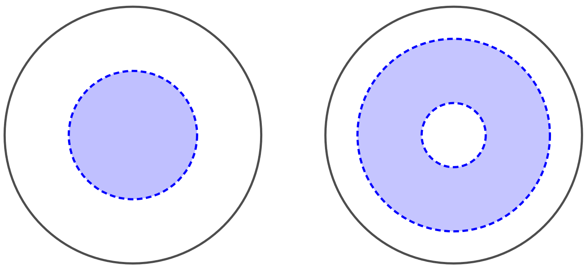
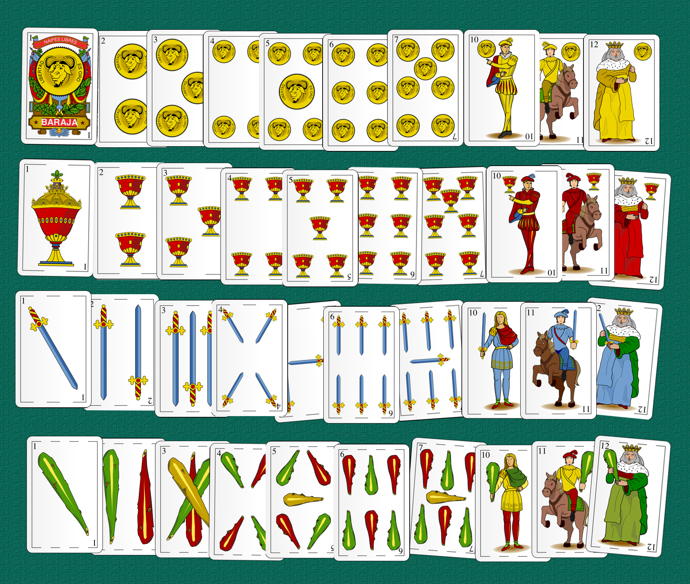
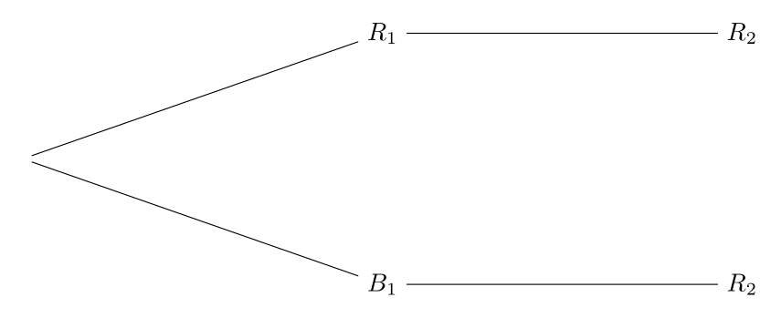
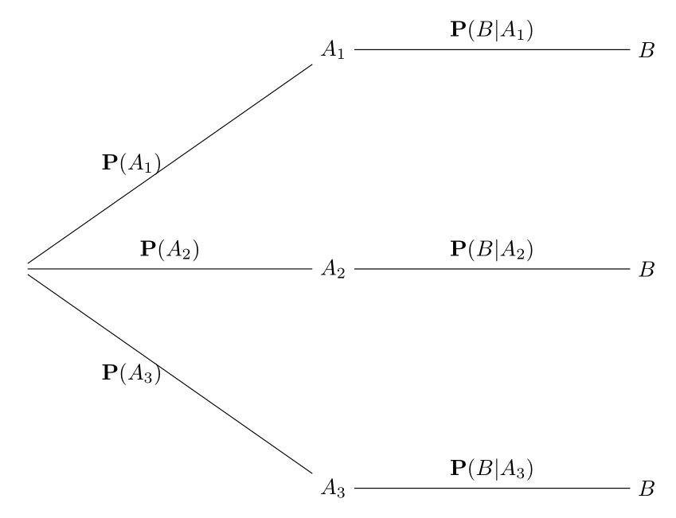
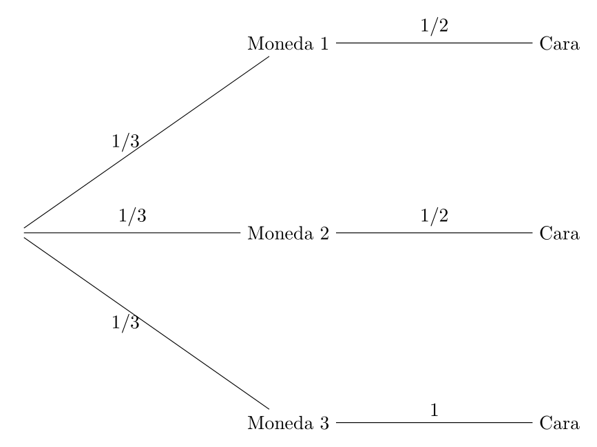
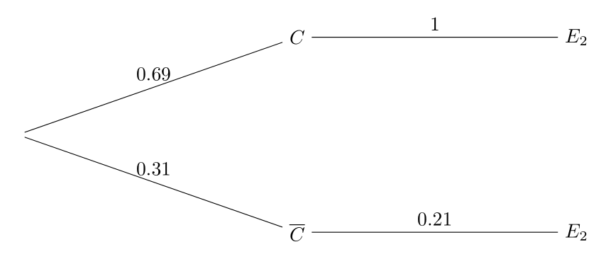
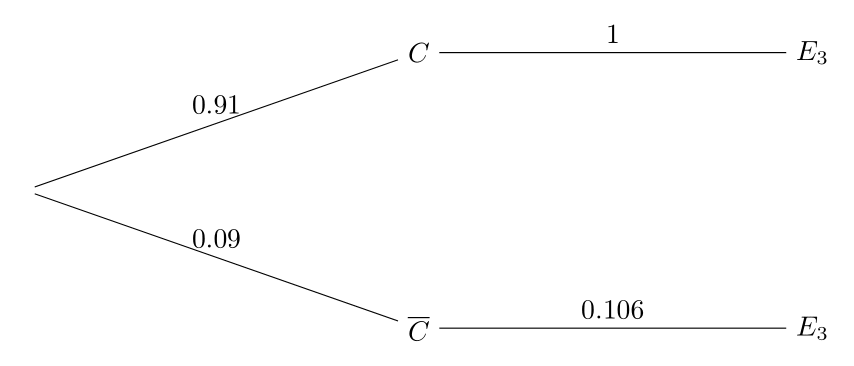

5 Probabilidad
5.1 Experimentos aleatorios y sucesos
Experimentos aleatorios y sucesos
La teoría de la probabilidad es una rama de las matemáticas que estudia situaciones en las que interviene el azar. Se ocupa de fenómenos o experimentos en los que, aun repitiéndolos en las mismas condiciones, no podemos predecir con total certeza cuál será el resultado, aunque sí podemos describir las posibilidades existentes.
Hablamos de experimentos aleatorios cuando el resultado final es impredecible y sólo se conoce una vez realizado el experimento. Sin embargo, antes de llevarlo a cabo, podemos enumerar todos los resultados posibles, aunque no sepamos cuál ocurrirá en cada ocasión.
Algunos ejemplos habituales de experimentos aleatorios son:
Lanzar una moneda y ver si sale cara o cruz,
Tirar un dado y observar qué número aparece,
Sacar una bola al azar de una urna,
Elegir una carta de una baraja sin mirar antes,
Contar cuántos homicidios ocurrirán en Barcelona durante 2026,
Determinar si se usaron armas de fuego en un crimen,
Encontrar sustancias ilegales en un control rutinario.
En todas estas situaciones, no podemos saber qué va a ocurrir exactamente, pero sí podemos conocer cuáles son las opciones posibles.
Dado un experimento aleatorio, llamamos:
Espacio muestral, denotado por \(\Omega\), al conjunto de todos los resultados posibles del experimento.
Suceso a cualquier subconjunto de resultados normalmente caracterizado por una propiedad determinada.
Ejemplo
Consideremos el experimento aleatorio de lanzar una moneda dos veces. El espacio muestral está formado por los cuatro resultados posibles:
\[ \Omega=\{cc,cx,xc,xx\}, \]
donde usamos \(c\) para cara y \(x\) para cruz.
Algunos ejemplos de sucesos son:
\(A=\mbox{``Ha salido exactamente una cara''}=\{cx,xc\}\),
\(B=\mbox{``Ha salido al menos una cruz''}=\{cx,xc,xx\}\),
\(C=\mbox{``Ha salido más de una cruz''}=\{xx\}\),
\(D=\mbox{``No ha salido ninguna cruz''}=\{cc\}\).
Ejemplo
Consideremos el experimento aleatorio de lanzar un dado. El espacio muestral está formado por los seis posibles resultados:
\[ \Omega=\{1,2,3,4,5,6\}. \]
Ejemplos de sucesos son
\(A=\mbox{``Sale par''}=\{2,4,6\}\),
\(B=\mbox{``Sale mayor que 5''}=\{6\}\),
\(C=\mbox{``Sale menor que 4''}=\{1,2,3\}\),
\(D=\mbox{``Sale menor que 6 y mayor que 1''}=\{2,3,4,5\}\).
Ejemplo
En el contexto de la criminología, consideremos el experimento aleatorio de contabilizar el número de homicidios en Barcelona durante el próximo mes. El espacio muestral es:
\[ \Omega=\{0,1,2,3,4,\ldots\}. \]
Algunos sucesos posibles son:
\(A=\mbox{``Hay menos de 5 homicidios''}=\{0,1,2,3,4\}\),
\(B=\mbox{``Hay algún homicidio''}=\{1,2,3,4,\ldots\}\),
\(C=\mbox{``No hay ningún homicidio''}=\{0\}\),
\(D=\mbox{``No hay más de 7 homicidios''}=\{0,1,2,3,4,6,7\}\).
Ejemplo
Elegir al azar un punto en un círculo de radio 1.
En este caso el espacio muestral es el conjunto \(\Omega\) de todos los puntos del círculo.
Ejemplos de sucesos son:
\(A=\mbox{``La distancia al centro es menos de 0.5''}\),
\(B=\mbox{``La distancia al centro es menor que 0.75 y mayor que 0.25''}\).

Cuando realizamos un experimento aleatorio, diremos que un suceso \(A\) ha ocurrido (o se ha observado) si el resultado obtenido pertenece al conjunto \(A\).
Por ejemplo, si al lanzar un dado obtenemos un 6, habrán ocurrido los sucesos:
\[ A=\mbox{``Sale par''}\quad B=\mbox{``Sale mayor que 5''}, \]
ya que el resultado obtenido 6 cumple ambas condiciones.
De forma análoga, si al lanzar una moneda dos veces obtenemos dos cruces, habrán ocurrido los sucesos:
\[B=\mbox{``Ha salido al menos una cruz''},\] \[C=\mbox{``Ha salido más de una cruz''}.\]
5.2 Algunos sucesos especiales
En cualquier experimento aleatorio distinguimos los siguientes sucesos:
Suceso seguro al espacio muestral \(\Omega\), que contiene todos los resultados posibles. Se denomina seguro porque siempre ocurre, independientemente del resultado que se obtenga.
Suceso imposible al conjunto vacío \(\emptyset\), que no contiene ningún resultado. Se denomina imposible porque nunca puede ocurrir, ya que no incluye ningún resultado posible.
Dado un suceso \(A\) definimos su complementario, denotado por \(\bar{A}\), como el conjunto de todos los resultados del espacio muestral que no pertenecen a \(A\).
En otras palabras, el suceso \(\bar{A}\) ocurrirá cuando no ocurra \(A\) (y viceversa).
Ejemplo
Al lanzar un dado, el espacio muestral es \(\Omega=\{1,2,3,4,5,6\}\).
Consideremos el suceso
\[ A=\mbox{``Sale par''}=\{2,4,6\}. \]
Su complementario es
\[ \bar{A}=\mbox{``No sale par''}= \mbox{``Sale impar''} =\{1,3,5\}. \]
5.3 Operaciones con sucesos
Como los sucesos son subconjuntos del espacio muestral \(\Omega\), podemos aplicar sobre ellos las operaciones habituales entre conjuntos.
Dados dos sucesos \(A\) y \(B\), definimos:
Unión \(A\cup B\): Suceso que contiene los elementos de \(A\) y los elementos de \(B\). Ocurre cuando ocurre \(A\) o ocurre \(B\), o ambos a la vez.
Intersección \(A\cap B\): Suceso que contiene los resultados comunes a \(A\) y \(B\). Ocurre cuando \(A\) y \(B\) ocurren a la vez.
Diferencia \(A-B\): Suceso que los resultados de \(A\) que no están en \(B\).
Ocurre cuando ocurre \(A\) y no ocurre \(B\).
Ejemplo
Al lanzar un dado, consideremos los sucesos
\[ A=\mbox{``Sale par''}.\quad B=\mbox{``Sale menor que 4''}. \]
Entonces:
\(A\cup B=\mbox{``Sale par o sale menor que cuatro''}=\{1,2,3,4,6\}\),
\(A\cap B=\mbox{``Sale par y sale menor que 4''}=\{2\}\).
\(A-B=\mbox{``Sale par y no sale menor que 4''}=\{4,6\}\),
\(\bar{A}=\mbox{``Sale impar''}=\{1,3,5\}\),
\(\bar{B}=\mbox{``Sale mayor o igual que 4''}=\{4,5,6\}\).
Para cualquier suceso \(A\) se cumple que
\[ A\cup \bar{A}=\Omega, \]
ya que todo resultado posible pertenece necesariamente a \(A\) o a su complementario.
Por otro lado, se tiene que
\[ A\cap \bar{A}=\emptyset, \]
puesto que ningún resultado puede pertenecer simultáneamente a un suceso y a su complementario.
Finalmente, diremos que dos sucesos \(A\) y \(B\) son incompatibles si
\[A\cap B=\emptyset.\]
Dos sucesos incompatibles son aquéllos que nunca pueden ocurrir a la vez.
Ejemplo
Al lanzar un dado, los sucesos
\(A=\mbox{``Salir par''}=\{2,4,6\}\),
\(B=\mbox{``Salir impar''}=\{1,3,5\}\),
son incompatibles.
5.4 Probabilidad
Todos tenemos una idea intuitiva de la probabilidad. Por ejemplo, al lanzar una moneda equilibrada, sabemos que la probabilidad de obtener cara es \(0.5\). Esto refleja que tenemos el mismo grado de certeza de obtener cara que de obtener cruz.
Dado un suceso \(A\), la probabilidad de \(A\), denotada por \(\mathbf{P}(A)\), es un número comprendido entre \(0\) y \(1\) que mide el grado de certidumbre de que dicho suceso ocurra al realizar un experimento aleatorio.
Dar una definición rigurosa de probabilidad no es inmediato. A lo largo de la historia se han desarrollado distintos enfoques para formalizar este concepto, entre los que destacan:
Método frecuentista.
Regla de Laplace (Laplace, finales s. XVIII).
Definición formal o axiomática (Kolmogorov, 1933).
5.4.1 Método frecuentista
Este método consiste en identificar la probabilidad de un suceso con la frecuencia relativa con la que éste ocurre al repetir el experimento aleatorio reiteradas veces.
Supongamos que realizamos un experimento aleatorio repetidamente y que, en cada repetición, observamos si ocurre o no un suceso \(A\). Definimos la probabilidad de \(A\), denotada por \(\mathbf{P}(A)\), como el número al que se aproxima el cociente
\[ \frac{\mbox{``Número de veces que ocurre A''}}{\mbox{``Número de veces que se ha repetido el experimento''}}, \]
cuando el número de repeticiones crece indefinidamente.
Ejemplo
Tenemos una urna con 100 bolas: 30 negras y 70 blancas. Se extrae una bola al azar (con reposición) y consideramos el suceso
\[A=\mbox{``Sale bola negra''}.\]
Para estimar la probabilidad de \(A\), procedemos del siguiente modo:
Extraemos una bola, observamos su color y la devolvemos a la urna.
Repetimos el proceso sucesivamente, y para cada número de repeticiones \(n\) (\(n=1,2,3,\ldots\)), tomamos nota de la frecuencia relativa \[\frac{m}{n},\] siendo \(m\) el número de veces que ha ocurrido el suceso \(A\).
A medida que \(n\) aumenta, observamos a qué valor se aproxima dicha frecuencia relativa. Ese valor se toma como la probabilidad \(\mathbf{P}(A)\).
Tras 1000 extracciones se obtuvieron, entre otros, los siguientes resultados:
| n | color | m | m/n |
|---|---|---|---|
| 1 | N | 1 | 1.000 |
| 2 | B | 1 | 0.500 |
| 3 | N | 2 | 0.667 |
| 4 | N | 3 | 0.750 |
| 5 | N | 4 | 0.800 |
| 10 | B | 6 | 0.600 |
| 100 | N | 32 | 0.320 |
| 500 | B | 149 | 0.298 |
| 1000 | N | 305 | 0.305 |
Representando gráficamente los valores \(n\) (abscisas) y \(m/n\) ordenadas tenemos los siguiente.
Al representar gráficamente la frecuencia relativa frente al número de extracciones, observamos que esta se aproxima progresivamente a \(0.3\). Esto indica que \(\textbf{P}(A)=0.3\).
5.4.2 Regla de Laplace
En la práctica, no es posible repetir un experimento un número infinito de veces, por lo que el método frecuentista solo permite estimar probabilidades.
Sin embargo, en experimentos con un número finito de resultados \[\Omega=\{s_1,s_2,\ldots,s_n\},\] cuando todos ellos son igualmente probables (es decir, tenemos el mismo grado de certeza de que ocurra cualquiera de ellos), podemos aplicar un método exacto conocido como regla de Laplace.
La regla de Laplace se aplica como sigue. Si \(A\) es un suceso, definimos la probabilidad de \(A\), \(\textbf{P}(A)\), como
\[ \textbf{P}(A)=\frac{\mbox{Número de elementos de A}}{\mbox{Número de elementos de }\Omega}. \]
Ejemplo
Al lanzar una moneda dos veces, el espacio muestral es
\[ \Omega=\{cc,cx,xc,xx\}. \]
Los cuatro resultados del espacio muestral son igualmente probables. Podemos, por tanto, aplicar la regla de Laplace. La probabilidad de \(A=\mbox{``Sacar exactamente una cara''}=\{cx,xc\}\) es
\[ \textbf{P}(A)=\frac{2}{4}=0.5, \]
ya que \(A\) tiene dos elementos y \(\Omega\) tiene cuatro elementos.
Ejemplo
Volvamos al ejemplo de la urna con 30 bolas negras y 70 blancas.
Hacemos el experimento de extraer una bola y consideramos el suceso
\[ A=\mbox{``Sale bola negra''}. \]
Todas las bolas tienen la misma probabilidad de ser extraídas, por lo que la regla de Laplace es aplicable. El espacio muestral tiene 100 elementos y el suceso \(A\) tiene 30, luego \[ \textbf{P}(A)=\frac{30}{100}=0.3. \] Este valor coincide con el obtenido mediante el método frecuentista.
5.4.3 Definición axiomática de probabilidad
Los métodos expuestos anteriormente para calcular probabilidades no son suficientes para abarcar todos los experimentos aleatorios. El método frecuentista se basa en repetir un experimento muchas veces y observar la frecuencia relativa. Sin embargo, hay situaciones en las que este procedimiento no es viable: algunos experimentos no pueden repetirse (por ejemplo, evaluar la probabilidad de que cierto terremoto ocurra el próximo año), otros no son reproducibles en condiciones idénticas, o simplemente requieren un número de repeticiones tan grande que el enfoque resulta impracticable. Por otra parte, la regla de Laplace solo se puede aplicar cuando existe un número finito de resultados igualmente probables, lo cual rara vez ocurre en la práctica.
En esencia, cualquier procedimiento de asignación de probabilidades consiste en asociar a cada suceso un número \(\textbf{P}(A)\) comprendido entre 0 y 1. El matemático ruso Andréi Kolmogórov advirtió que esta asignación debía satisfacer un conjunto mínimo de reglas –o axiomas– para que la probabilidad describiera de forma coherente el comportamiento de los experimentos aleatorios. Además, dichos axiomas resultan suficientes para garantizar un análisis riguroso de la probabilidad.
Esto conduce a la necesidad de una definición formal del concepto.
Definición 5.1 (Kolmogorov, 1933) La probabilidad, \(\textbf{P}\), es una función que asigna a cada suceso \(A\) un número \(\textbf{P}(A)\) verificando los siguientes axiomas:
Para cualquier suceso \(A\), \(\textbf{P}(A)\ge 0\),
\(\textbf{P}(\Omega)=1\),
Si \(A\cap B=\emptyset\) (es decir, \(A\) y \(B\) son incompatibles), entonces \(\textbf{P}(A\cup B)=\textbf{P}(A)+\textbf{P}(B)\).
5.4.4 Propiedades de la probabilidad
A partir de las propiedades anteriores, es posible deducir nuevas propiedades que verifica la probabilidad. En la siguiente proposición recogemos algunas de las más importantes.
Proposición 5.1 (Propiedades de la probabilidad) Para cualesquiera dos sucesos A y B se verifica:
\(\textbf{P}(\emptyset)=0\),
Si \(A\) está incluido en \(B\), entonces \(\textbf{P}(A)\le\textbf{P}(B)\).
Regla del complementario: \(\textbf{P}(\bar A)=1-\textbf{P}(A)\).
Regla de la unión: \(\textbf{P}(A\cup B)=\textbf{P}(A)+\textbf{P}(B)-\textbf{P}(A\cap B)\).
Estas propiedades son muy útiles en el cálculo de probabilidades. Veamos algunos ejemplos:
Ejemplo
Retomemos el ejemplo de lanzar un dado negro y otro rojo juntos. Calcula la probabilidad \(\textbf{P}(A)\) del suceso \[ A = \mbox{``Alguno de los resultados es mayor que 2''}. \]
Solución: En este caso la regla de Laplace es aplicable. Sin embargo, \(A\) contiene muchos elementos, por lo que es tedioso contarlos.
Es más sencillo considerar el complementario \[ \begin{aligned} \bar{A} &= \text{``Ninguno de los resultados es mayor que 2''} \\ &= \{(1,1),(1,2),(2,1),(2,2)\}. \end{aligned} \]
Para dicho complementario se verifica \[ \textbf{P}(\bar A)=\frac{4}{36}=\frac{1}{9}=0.1111. \]
De esta manera, usando la regla del complementario: \[ \textbf{P}(A)=1-\textbf{P}(\bar A)=1-0.8889. \]
Ejemplo
Se saca una carta al azar de una baraja española de 40 cartas. Calcula la probabilidad de sacar una figura o un oro (o ambas cosas).
Solución: Sean \[ \begin{aligned} A &= \mbox{``Sacar figura''},\\ B &= \mbox{``Sacar oro''}. \end{aligned} \] Usando la regla de la unión, obtenemos la probabilidad pedida: \[ \begin{aligned} \textbf{P}(A \cup B) &= \textbf{P}(A) + \textbf{P}(B) - \textbf{P}(A \cap B) = \frac{12}{40} + \frac{10}{40} - \frac{3}{40} \\ &= \frac{12 + 10 - 3}{40} = \frac{19}{40} = 0.475. \end{aligned} \]

Ejemplo
Se saca una carta al azar de una baraja española de 40 cartas. Calcula la probabilidad de no sacar ni figura ni oro.
Solución: Nos están pidiendo la probabilidad complementaria del ejemplo anterior. Es decir, la probabilidad pedida es
\[ \textbf{P}(\overline{A \cup B})=1-\textbf{P}(A \cup B)=1-\frac{19}{40}=\frac{21}{40}=0.525. \]
5.5 Probabilidad condicionada
Supongamos que se saca una carta al azar de una baraja española.
La probabilidad del suceso \[ A = \mbox{``Sacar sota''}. \]
es
\[ \textbf{P}(A)=\frac{4}{40}=0.1. \] Ahora, supongamos que, antes de ver la carta extraída, nos dicen que la carta obtenida es una figura.
Al tener información adicional, debemos tener en cuenta menos casos, obteniendo una nueva probabilidad para \(A\) de \(\frac{4}{12} = 0.3333\).
El concepto de probabilidad condicionada indica la probabilidad de un suceso cuando se sabe que otro ha ocurrido, que es la situación que tenemos en el ejemplo anterior.
Formalmente, dicha probabilidad se define como sigue.
Definición 5.2 (Probabilidad condicionada) Dados dos sucesos \(A\) y \(B\) definimos la probabilidad de \(A\) condicionada por \(B\), denotada por \(\textbf{P}(A|B)\), mediante
\[ \textbf{P}(A|B) =\frac{\textbf{P}(A\cap B)}{\textbf{P}(B)}. \]
Ejemplo
En el ejemplo anterior, para los sucesos \[ A = \mbox{``Sacar una sota''},\quad B = \mbox{``Sacar figura''}, \]
tenemos
\[ \textbf{P}(A|B) = \frac{\textbf{P}(A\cap B)}{\textbf{P}(B)} = \frac{{4}/{40}}{{12}/{40}} = \frac{4}{12} = 0.3333. \]
Un error frecuente es confundir la probabilidad condicional \(\textbf{P}(A|B)\) con su inversa \(\textbf{P}(B|A)\). Este error es conocido como paradoja del fiscal (en inglés, Prosecutor’s Fallacy).
Veamos un ejemplo:
Ejemplo (Falacia del fiscal)
Se ha cometido un asesinato en un pueblo y se está investigando a un sospechoso, el cual es pelirrojo.
Un cabello hallado en la escena del crimen prueba que el asesino era pelirrojo.
En el pueblo, el 0.1% de la población es pelirroja.
El fiscal razona del siguiente modo: dado que la probabilidad de que una persona sea pelirroja es solo del 0.1%, como el sospechoso es pelirrojo, la probabilidad de que haya cometido el crimen es, por tanto, de 0.1%.
¿Es correcto este razonamiento? Veámoslo.
Consideremos los sucesos: \[ C = \text{``el sospechoso es culpable''}, \qquad E = \text{``el asesino es pelirrojo''}. \]
Sabemos que: \[ \mathbf{P}(E \mid \bar{C}) = 0.1\% = 0.001, \] es decir, si el sospechoso es inocente, la probabilidad de que el verdadero asesino sea pelirrojo coincide con la proporción de pelirrojos en la población.
Esto es correcto. Sin embargo, la probabilidad relevante para decidir sobre la culpabilidad del sospechoso es \[ \mathbf{P}(\bar{C} \mid E), \] no ((E {C})). Confundir estas dos probabilidades es el error conocido como la falacia del fiscal.
Supongamos que en el pueblo hay 5000 personas. Dado que el 0.1% de la población es pelirroja, el número de pelirrojos es \(5000\cdot 0.001 = 5\).
Suponiendo que todas las personas del pueblo tienen la misma probabilidad de ser el asesino, y sabiendo que el asesino es pelirrojo, cualquiera de esos cinco pelirrojos podría ser culpable con igual probabilidad.
De ellos, solo uno es el sospechoso. Por tanto, la probabilidad de que el sospechoso sea culpable es: \[ \mathbf{P}(C \mid E) = \frac{1}{5} = 0.2, \] muy superior al \(0.001\) propuesto por el fiscal.
Obsérvese que en este cálculo no se han tenido en cuenta otras pruebas (motivo, coartada, antecedentes, etc.). Si existieran más indicios incriminatorios, la probabilidad de culpabilidad podría ser aún mayor.
5.5.1 Regla del producto
Usando la definición de probabilidad condicionada, obtenemos la siguiente fórmula para la probabilidad de la intersección de sucesos \[ \textbf{P}(A\cap B) = \textbf{P}(B)\textbf{P}(A|B). \] Dicha relación se conoce como regla del producto.
Veamos un ejemplo.
Ejemplo
Supongamos que tenemos una urna con 80 bolas blancas y 20 bolas rojas. Supongamos que extraemos al azar dos bolas consecutivamente y sin reemplazamiento. Calcule las siguientes probabilidades:
La primera bola extraída es roja.
La segunda bola extraída es roja, si sabemos que la primera bola fue roja.
Las dos bolas extraídas son rojas.
Solución: Consideremos los sucesos \[ \begin{aligned} R_1 &= \mbox{``La primera bola extraída es roja''},\\ R_2 &= \mbox{``La segunda bola extraída es roja''}. \end{aligned} \] La primera probabilidad pedida es \(\textbf{P}(R_1)\). Usando la regla de Laplace tenemos \[ \textbf{P}(R_1) = \frac{20}{100} = 0.2, \] ya que hay 20 posibilidades de escoger una bola roja entre 100 bolas.
La segunda probabilidad pedida es \(\textbf{P}(R_2|R_1)\). Al haber extraído una bola roja en la primera extracción, en la urna quedarán 19 bolas rojas de un total de 99. Por tanto, \[ \textbf{P}(R_2|R_1) = \frac{19}{99} = 0.1919. \]
Finalmente, la última probabilidad a calcular es \(\textbf{P}(R_1 \cap R_2)\). Usando la regla del producto tenemos \[ \textbf{P}(R_1 \cap R_2) = \textbf{P}(R_1)\textbf{P}(R_2|R_1) = 0.2 \cdot 0.1919 = 0.0384. \]
5.6 Teorema de la probabilidad total
Supongamos, como en el ejemplo anterior, una urna con 80 bolas blancas y 20 bolas rojas, donde se extraen dos bolas consecutivamente sin reemplazamiento. Nos preguntamos ahora por la probabilidad del suceso: \[ R_2 = \mbox{``La segunda bola extraída es roja''.} \]
Para la primera extracción sólo hay dos posibles sucesos, de los cuales sólo puede ocurrir uno: \[ \begin{aligned} R_1 &= \mbox{``La primera bola extraída es roja''},\\ B_1 &= \mbox{``La primera bola extraída es blanca''}. \end{aligned} \] Esto da lugar al siguiente árbol de posibilidades para las que ocurre \(R_2\):

La primera rama corresponde al suceso \(R_1 \cap R_2\) y la segunda a \(B_1 \cap R_2\). La unión de ambos sucesos, los cuales son incompatibles, da el suceso \(R_2\). Por tanto, \[ \begin{aligned} \textbf{P}(R_2) &= \textbf{P}\Big((R_1 \cap R_2) \cup (B_1 \cap R_2)\Big) = \textbf{P}(R_1 \cap R_2) + \textbf{P}(B_1 \cap R_2) \\ &= \textbf{P}(R_1)\textbf{P}(R_2|R_1) + \textbf{P}(B_1)\textbf{P}(R_2|B_1) = \frac{20}{100} \cdot \frac{19}{99} + \frac{80}{100} \cdot \frac{20}{99} = 0.2, \end{aligned} \] donde hemos aplicado dos veces la regla del producto.
En el anterior ejemplo los sucesos \(R_1,B_1\) cubren todas las posibilidades (siempre ocurre alguno) y son incompatibles (no pueden ocurrir a la vez).
En general, diremos que una familia de sucesos \(A_1,A_2,A_3,\ldots,A_n\) es una partición del espacio muestral si:
Siempre ocurre algún \(A_i\) (es decir, \(\Omega=A_1\cup A_2 \cup \ldots \cup A_n\)),
Son incompatibles dos a dos (es decir, \(A_i\cap A_j=\emptyset\) si \(i\neq j\)).
El método empleado en el ejemplo anterior puede generalizar se a cualquier partición del espacio muestral. Más concretamente, tenemos lo siguiente:
Teorema 5.1 (de la probabilidad total) Dado un suceso \(B\) y una partición \(A_1,A_2,A_3,\ldots,A_n\) del espacio muestral, se verifica \[ \textbf{P}(B)=\sum_{i=1}^n \textbf{P}(A_i)\textbf{P}(B|A_i). \]
Al igual que en el ejemplo anterior con las bolas blancas y rojas, podemos visualizar el teorema anterior con un árbol de posibilidades. Por ejemplo, supongamos que tenemos el suceso \(B\) y una partición \(A_1,A_2,A_3\) del espacio muestral, tenemos el siguiente árbol

De acuerdo al teorema de la probabilidad total, calcularemos la probailidad de \(B\) mediante: \[ \textbf{P}(B)=\textbf{P}(A_1)\textbf{P}(B|A_1)+ \textbf{P}(A_2)\textbf{P}(B|A_2)+ \textbf{P}(A_3)\textbf{P}(B|A_3). \]
Veamos un ejemplo:
Ejemplo
Se dispone de tres monedas. Dos normales, y una falsa con dos caras. Se coge una moneda al azar, se lanza, y se observa el resultado. ¿Cuál es la probabilidad de sacar cara?
Solución: Tenemos el siguiente árbol de posibilidades

\[ \textbf{P}(\mbox{Cara})=\frac{1}{3}\cdot\frac{1}{2}+\frac{1}{3}\cdot\frac{1}{2}+\frac{1}{3}\cdot{1}=\frac{2}{3}=0.6667. \]
5.7 Regla de Bayes
Mientras que el teorema de la probabilidad total permite calcular la probabilidad de un suceso \(B\) mediante una partición del espacio muestral, el teorema de Bayes permite invertir el cálculo y determinar la probabilidad de los elementos de la partición dado que \(A\) ha ocurrido.
Concretemente tenemos lo siguiente:
Teorema 5.2 (Teorema (Regla de Bayes)) Sea \(B\) un suceso y \(A_1, A_2, \ldots, A_n\) una partición del espacio muestral.
Entonces, para cualquier \(i\), se verifica: \[
\textbf{P}(A_i|B) = \frac{\textbf{P}(A_i)\cdot \textbf{P}(B|A_i)}{\textbf{P}(B)}=
\frac{\textbf{P}(A_i)\cdot\textbf{P}(B|A_i)}{\sum_{j=1}^n \textbf{P}(A_j)\cdot\textbf{P}(B|A_j)} .
\]
Observa que la segunda igualdad hemos reemplazado \(\textbf{P}(B)\) por su expresión proporcionada por el teorema de la probabilidad total.
Veamos el uso de la Regla de Bayes en un ejemplo:
Ejemplo
Se dispone de tres monedas. Dos normales, y una falsa con dos caras. Se coge una moneda al azar, se lanza, y se observa el resultado.
Si se observa cara, ¿cuál es la probabilidad de que la moneda escogida sea la falsa?
Solución: Tenemos el siguiente árbol de posibilidades:
Aplicando la Regle de Bayes \[ \textbf{P}(\mbox{Moneda 3}|\mbox{Cara})= \frac{\frac{1}{3}\cdot{1}}{\frac{1}{3}\cdot\frac{1}{2}+\frac{1}{3}\cdot\frac{1}{2}+\frac{1}{3}\cdot{1}}=\frac{1/3}{2/3}=\frac{1}{2}. \]
5.8 Aplicación de la Regla de Bayes al análisis de pruebas forenses en criminología
El teorema de Bayes tiene numerosas aplicaciones prácticas, especialmente en contextos donde se va actualizando la información disponible a medida que aparecen nuevas evidencias.
Uno de estos contextos es la investigación criminal, donde Bayes permite actualizar la probabilidad de culpabilidad de un sospechoso conforme se incorporan nuevas pruebas forenses.
A continuación, veremos un ejemplo ilustrativo de cómo aplicar el teorema de Bayes al análisis de pruebas en un caso de homicidio.
Escena del crimen: El cuerpo de una mujer de 22 años es encontrado apuñalado hasta la muerte en su hogar, en el oeste de Massachusetts. Hay signos evidentes de lucha en la habitación y en el cuerpo, pero no hay evidencia de agresión sexual. Se encuentran manchas de sangre en el área donde se descubrió el cuerpo.
Una investigación preliminar del entorno señala a la pareja sentimental de la víctima como principal sospechoso.
Sin tener en cuenta ninguna prueba forense adicional, los investigadores estiman inicialmente que la probabilidad de que el sospechoso sea culpable es
\[ \textbf{P}(C)=0.5. \]
En lo que sigue, iremos incorporando progresivamente las siguientes evidencias obtenidas tras una inspección detallada de la escena del crimen:
Evidencia 1: Sangre en la escena del crimen.
Evidencia 2: Huellas dactilares.
Evidencia 3: El asesino es zurdo.
Tras cada evidencia, analizaremos como se modifica la probabilidad de culpabilidad al ir teniendo en cuanta las diferentes evidencias usando la regla de Bayes.
Evidencia 1: Sangre en la escena del crimen
Las pruebas realizadas indican que la víctima tenía tipo de sangre A. Sin embargo, la sangre encontrada en la escena del crimen corresponde a un individuo con tipo de sangre O.
Se sabe que el sospechoso tiene tipo de sangre O, por lo que no queda descartado como posible fuente de la sangre.
Un experto indica que aproximadamente el 45% de la población de Estados Unidos tiene sangre de tipo O. Por tanto,
\[ \textbf{P}(E_1|\bar{C})=0.45, \] donde
\[ E_1=\mbox{``El asesino tiene sangre de tipo O''}. \]
Como el sospechoso tiene sangre de tipo O. Si el sospechoso es culpable entonces el asesino es necesariamente zurdo. Por tanto,
\[ \textbf{P}(E_1|C)=1. \]
Teniendo en cuenta las dos posibilidades: culpabilidad o no culpabilidad, tenemos el siguiente digrama de árbol:
Aplicando la regla de Bayes:
\[ \textbf{P}(C|E_1)=\frac{\textbf{P}(E_1|C)\textbf{P}(C)}{\textbf{P}(E_1|C)\textbf{P}(C)+\textbf{P}(E_1|\bar{C})\textbf{P}(\bar{C})}=\frac{0.5\cdot 1}{0.5\cdot 1+0.5\cdot 0.45}=0.6897. \]
Tras considerar la primera evidencia, actualizamos la probabilidad de culpabilidad a \[ \textbf{P}(C):=0.6897. \]
Evidencia 2: Huellas dactilares
Se analiza una impresión parcial encontrada en el arma homicida del dedo índice y se compara con las huellas del sospechoso. El análisis forense muestra que las huellas coinciden.
Un modelo forense computacional estima que solo el 21% de la población mundial presenta coincidencia con una impresión parcial de ese tipo. Por tanto,
\[ \textbf{P}(E_2|\bar{C})=0.21. \] donde
\[ E_2=\mbox{``El asesino presenta el tipo de huella encontrado''}. \]
La huella encontrada coincide con la del sospechoso, por tanto,
\[ \textbf{P}(E_2|C)=1. \]
Esto da lugar al siguiente digrama de árbol:

Aplicando de nuevo Bayes (usando la probabilidad actualizada anterior):
\[ \textbf{P}(C|E_2)=\frac{\textbf{P}(E_2|C)\textbf{P}(C)}{\textbf{P}(E_2|C)\textbf{P}(C)+\textbf{P}(E_2|\bar{C})\textbf{P}(\bar{C})}=\frac{0.69\cdot 1}{0.69\cdot 1+0.31\cdot 0.21}=0.91. \] Tras la segunda evidencia, actualizamos la probabilidad a
\[ \textbf{P}(C)=0.91. \]
Evidencia 3: El asesino es zurdo
El examen de las heridas, la forma en que se produjeron y la orientación de la huella dactilar indican de forma inequívoca que el asesino es zurdo.
El sospechoso resulta ser también zurdo, por lo que esta característica es compatible con la hipótesis de culpabilidad.
Se estima que aproximadamente el 10.6 % de la población mundial es zurda. Por tanto,
\[ \textbf{P}(E_3|\bar{C})=0.106, \] donde
\[ E_3=\mbox{``El asesino es zurdo''}. \] Si el sospechoso es culpable, necesariamente el asesino es zurdo, por tanto:
\[ \textbf{P}(E_3|C)=1. \]
En este caso, tenemos el siguiente digrama de árbol:

Aplicando Bayes una última vez:
\[ \textbf{P}(C|E_3)=\frac{\textbf{P}(E_3|C)\textbf{P}(C)}{\textbf{P}(E_3|C)\textbf{P}(C)+\textbf{P}(E_3|\bar{C})\textbf{P}(\bar{C})}=\frac{0.91\cdot 1}{0.91\cdot 1+0.09\cdot 0.106}=0.99. \]
Tras considerar todas las evidencias, obtenemos
\[ \textbf{P}(C)=0.99 \]
lo que constituye evidencia abrumadora de que el sospechoso es el asesino.
5.8.1 Cuantificación de las evidencias forenses mediante razones de verosimilitud
Cuando trabajamos con el teorema de Bayes, es habitual expresar los resultados en términos de probabilidades tal como hemos hecho en el análisis anterior.
Sin embargo, en el análisis forense resulta más informativo y más cómodo trabajar con razones de probabilidad (“odds” en inglés).
Dado un suceso \(C\) (por ejemplo, “el sospechoso es culpable”), definimos la razón de probabilidad de \(C\) como
\[ \mathrm{Odds}(C)=\frac{\textbf{P}(C)}{\textbf{P}(\bar{C})}=\frac{\textbf{P}(C)}{1-\textbf{P}(C)}. \]
Las razones de probabilidad comparan directamente la plausibilidad de la hipótesis \(C\) (por ejemplo, “el sospechos es culpable”) frente a su alternativa \(\bar{C}\) (por ejemplo, “el sospechos es inocente”):
\(\mathrm{Odds}(C)=1\): ambas hipótesis son igualmente probables.
\(\mathrm{Odds}(C)>1\): \(C\) es más probable que \(\bar{C}\).
\(\mathrm{Odds}(C)<1\): \(C\) es menos probable que \(\bar{C}\).
Estas magnitudes permiten interpretar con claridad cómo cada evidencia refuerza o debilita una hipótesis.
Por ejemplo, si \(\textbf{P}(C)=0.75\), entonces \[ \mathrm{Odds}(C)=\frac{0.75}{0.25}=3, \] lo que significa que la hipótesis \(C\) es tres veces más plausible que su alternativa.
Por otro lado, dado el valor de la razón de probabilidad, podemos recuperar el valor de la probabilidad, mediante:
\[ \textbf{P}(C)=\frac{\mathrm{Odds}(C)}{1+\mathrm{Odds}(C)}. \] En nuestro caso particular, en el que \(\mathrm{Odds}(C)=3\), recuperamos el valor de la probabilidad
\[ \textbf{P}(C)=\frac{3}{4}=0.75. \]
Dada una evidencia \(E\), definimos la razón de verosimilitud como \[ \Lambda(E)=\frac{\textbf{P}(E\mid C)}{\textbf{P}(E\mid \bar C)}. \] La razón de verosimilitudes mide cuántas veces la evidencia es más compatible con la hipótesis \(C\) que con \(\bar C\). A mayor valor de \(\Lambda(E)\) mayor es la fuerza probatoria de la evidencia \(E\) respaldando la hipótesis \(C\).
\(\Lambda(E)=1\): la evidencia \(E\) no favorece a ninguna de las dos hipótesis.
\(\Lambda(E)>1\): la evidencia \(E\) apoya la culpabilidad \(C\).
\(\Lambda(E)<1\): la evidencia \(E\) apoya la inocencia \(\bar{C}\).
Ahora bien, como consecuencia inmediata de la regla de Bayes tenemos:
\[ \mathrm{Odds}(C\mid E)=\mathrm{Odds}(C)\cdot \Lambda(E). \]
Cada nueva evidencia multiplica las odds previas por su razón de verosimilitudes.
En nuestro ejemplo del crimen de Massachusetts teníamos las siguientes razones de verosimilitud para las evidencias \(E_1,E_2,E_2\):
| Evidencia | Descripción | \(\textbf{P}(E_i \mid C)\) | \(\textbf{P}(E_i \mid \bar{C})\) | \(\Lambda_i\) |
|---|---|---|---|---|
| \(E_1\) | Sangre tipo O | 1 | 0.45 | 2.22 |
| \(E_2\) | Coincidencia de huellas dactilares | 1 | 0.21 | 4.76 |
| \(E_3\) | El asesino es zurdo | 1 | 0.106 | 9.43 |
Tenemos que la evidencia con mayor ranzón de verosimulitud es \(E_3\), sería la evidencia con más fuerza probatoria, mientras que la evidencia \(E_1\) sería la evidencia con menos fuerza probatoria.
La razón de verosimilitud de evidencia total \(E\) se obtiene multiplicando las razones de verosimilitud de las evidencias individuales: \[ \Lambda(E)=\Lambda(E_1)\cdot\Lambda(E_2)\cdot\Lambda(E_3)=2.22\cdot 4.76 \cdot 9.43 = 99.65. \]
Por otro lado, como la probabilidad inicial de culpabilidad era \(\textbf{P}(C)=0.5\), se tiene \(\mathrm{Odds}(C)=1\), y por tanto, incorporando la evidencia total \(E\), tenemos: \[ \mathrm{Odds}(C\mid E)=\mathrm{Odds}(C)\cdot\Lambda(E)=99.65. \]
Lo que, en términos de probabilidad, se traduce en \[ \textbf{P}(C\mid E)=\frac{99.65}{1+99.65}\approx 0.99, \] que era la probabilidad de culpabilidad que obtuvimos anteriormente.
En general, en el análisis de las evidencias forenses se procede como sigue:
Definir la hipótesis \(C\) que se desea evaluar (por ejemplo, la culpabilidad del sospechoso).
Determinar la probabilidad inicial \(\mathbf{P}(C)\) a partir de la información preliminar del caso, antes de considerar las pruebas forenses.
Calcular las odds iniciales:
\[ \mathrm{Odds}(C)=\frac{\mathbf{P}(C)}{1-\mathbf{P}(C)}. \]
- Identificar las pruebas forenses relevantes:
\[ E_1, E_2, \ldots, E_n. \]
Calcular las razones de verosimilitud individuales: \[ \Lambda(E_1), \Lambda(E_2), \ldots, \Lambda(E_n), \] basándose en datos poblacionales, estudios forenses o conocimiento experto.
Calcular la razón de verosimilitud total: \[ \Lambda(E)=\Lambda(E_1)\cdot\Lambda(E_2)\cdots\Lambda(E_n). \]
Actualizar las odds con la evidencia total: \[ \mathrm{Odds}(C\mid E)=\mathrm{Odds}(C)\cdot\Lambda(E). \]
Obtener la probabilidad posterior: \[ \mathbf{P}(C\mid E)=\frac{\mathrm{Odds}(C\mid E)}{1+\mathrm{Odds}(C\mid E)}. \]
5.8.2 Caso real: indentificación de los restos de Ricardo III
En el año 2012, en base a leyendas populares, los arqueólogos comenzaron la búsqueda de los restos de Ricardo III en un aparcamiento en Leicester (Reino Unido). No tardaron en encontrar un esqueleto.
Las pruebas documentales y registros históricos, soportaban débilmente que el esqueleto fuese Ricardo III, dando una probabilidad inicial de
\[ \textbf{P}(C)=\frac{1}{40}=0.0256 \]
de que realmente fuera él. Lo que refleja que, aun encontrándose un esqueleto en la zona correcta, era mucho más probable que se tratara de otra persona enterrada allí a lo largo de los siglos.
Dicha probabilidad puede transformarse en odds: \[ \mathrm{Odds}(C)=\frac{1/40}{1-1/40}= 0.0256, \] obteniendo un número bastante más bajo que 1.
Evidencias analizadas: A partir de esta probabilidad inicial, se incorporaron progresivamente diversas líneas de evidencia independientes, tanto antropológicas como genéticas. Para cada evidencia \(E_i\), se evaluó su compatibilidad con ambas hipótesis calculando la correspondiente razón de verosimilitud.
Las principales evidencias consideradas fueron las siguientes:
| Evidencia \(E_i\) | Descripción | Razón de verosimilitud \(\Lambda_i\) |
|---|---|---|
| \(E_1\) | Sexo y edad del esqueleto compatibles con Ricardo III | 5.3 |
| \(E_2\) | Datación por radiocarbono (siglo XV) | 1.8 |
| \(E_3\) | Escoliosis severa compatible con descripciones históricas | 212 |
| \(E_4\) | Heridas perimortem compatibles con muerte en batalla | 42 |
| \(E_5\) | Coincidencia de ADN mitocondrial con descendientes maternos | 478 |
| \(E_6\) | Haplotipo del cromosoma Y (discrepancia) | 0.16 |
Vemos que la evidencia con mayor fuerza probatoria es la coincidencia del ADN mitocondrial con descendientes maternos. Todas las pruebas respaldan que los restos correspondan a Ricardo III, salvo la discrepancia del cromosoma Y con descendientes paternos. Esta prueba en contra podría deberse a una infidelidad en la línea paterna que diera lugar a un hijo bastardo. En este último caso, se obtiene una razón de verosimilitud menor que 1.
Veamos cómo se traducen las evidencias anteriores en términos de probabilidad.
La razón de verisilitud total es el producto de todas las evidencias individuales: \[ \Lambda(E) = 5.3 \cdot 1.8 \cdot 212 \cdot 42 \cdot 478 \cdot 0.16=6496529. \] Tras incorporar toda la evidencia total \(E\): \[ \mathrm{Odds}(C|E)=\Lambda(E)\cdot \mathrm{Odds}(C)=6496529\cdot 0.0256= 166311.1. \] Volviendo a probabilidad: \[ \textbf{P}(C|E)=\frac{166311.1}{1+166311.1}=0.999994. \]
Como hemos comprobado, las pruebas condujeron a una probabilidad posterior abrumadora, de 0.999994, de que los restos pertenecieran a Ricardo III. Esta evidencia fue considerada suficientemente sólida por la comunidad científica e institucional como para reconocer oficialmente la identidad de los restos y proceder a su entierro con todos los honores en la catedral de Leicester.
Referencias:
Spiegelhalter, D. (2019). El arte de la estadística: Cómo aprender a partir de los datos. Barcelona: Capitán Swing.
King, T., Fortes, G., Balaresque, P., et al. Identification of the remains of King Richard III. Nature Communications, 5, 5631 (2014).
https://doi.org/10.1038/ncomms6631